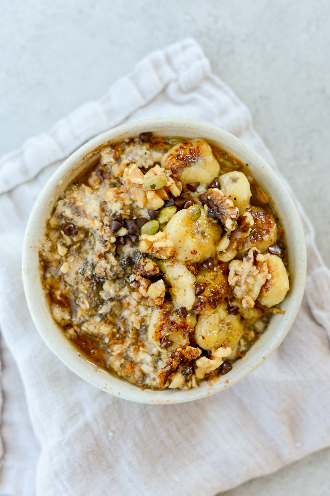

High Protein Oatmeal

Description
Oatmeal can be a little bland. This version adds a ton of flavour, calories and protein to make it a great every day breakfast
Ingredients
- 8 tablespoons of rolled oats
- 1 handful of raisons
- 3 tablespoons of frozen blueberries
- sugar free natural peanut butter
- MyProtein whey isolate (Smooth Chocolate)
- any fruit (It's nice to change what you use here periodically so this doesn't get boring as your everyday breakfast)
Steps
- Add 8 spoonfuls of oats to a bowl
- Add 3 spoons of frozen blueberries
- Add one handful of raisons
- Add 1 scoop of whey
- Pour 1 cup of water and mix
- Toss in the microwave for 4 minutes
- Chop up fruit
- Put 1-2 tablespoons of natural peanut butter
- Add fruit and mix
- Enjoy!